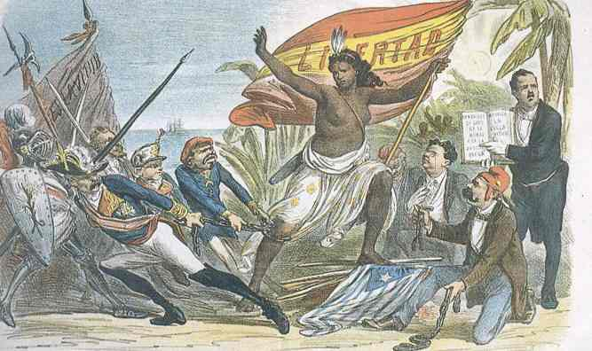
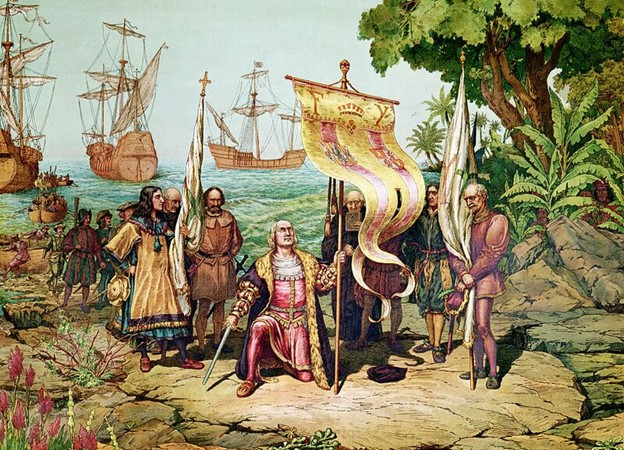
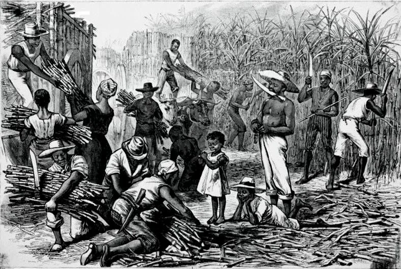

Kuba a gyarmati korszakban



Kuba történelmének gyarmati időszaka egy több mint négyszáz éves korszakot ölel fel, amely teljesen átformálta a sziget etnikai, kulturális és gazdasági arculatát. Amikor Kolumbusz Kristóf ezernégyvázkilencvenkettőben partot ért a szigeten, a világ egyik legszebb helyeként írta le azt. A spanyol hódítás azonban drasztikus változásokat hozott a helyi őslakos közösségek, például a tainók számára, akik a kényszermunka és a behurcolt betegségek miatt sajnálatos módon szinte teljesen eltűntek. A spanyol korona gyorsan felismerte, hogy Kuba földrajzi elhelyezkedése miatt stratégiai fontossággal bír. Havanna kikötője vált az Újvilág legfontosabb csomópontjává. Ez a város lett a spanyol kincses flották hivatalos gyülekezőhelye, ahol a Mexikóból és Peruból származó ezüstöt és aranyat szállító hajók összegyűltek, mielőtt elindultak volna az Atlanti-óceánon át Európa felé. Emiatt a szigetet gyakran nevezték a Kulcsnak, amely megnyitja a Mexikói-öblöt. Mivel a szigeten nem voltak jelentős aranybányák, a spanyol telepesek a mezőgazdaság felé fordultak. A tizennyolcadik századra Kuba a világ egyik legnagyobb cukortermelőjévé vált. A hatalmas cukornádültetvények és a dohányföldek munkaerőigényét Afrikából elhurcolt rabszolgák százezreivel biztosították. Ez a kegyetlen rendszer mély nyomott hagyott a társadalmon, ugyanakkor az afrikai kultúra, a zene, a vallás és a szokások beépültek a kubai mindennapokba, megalkotva a mai napig létező egyedi afro-kubai identitást. A gyarmati építészet és kultúra ma is látható Havanna, Trinidad vagy éppen Cienfuegos utcáin. A hatalmas védelmi erődök, mint a Castillo del Morro, a pompás barokk katedrálisok és a belső udvaros spanyol paloták mind a gyarmati elit gazdagságát hirdették. Kuba egészen az ezernyolcszázkilencvennyolcas spanyol-amerikai háborúig hűséges maradt a spanyol koronához, így az egyik utolsóként függetlenedő gyarmat volt az amerikai kontinensen. Ez a hosszú időszak kitörölhetetlenül meghatározta a szigetország jelenét és kultúráját.